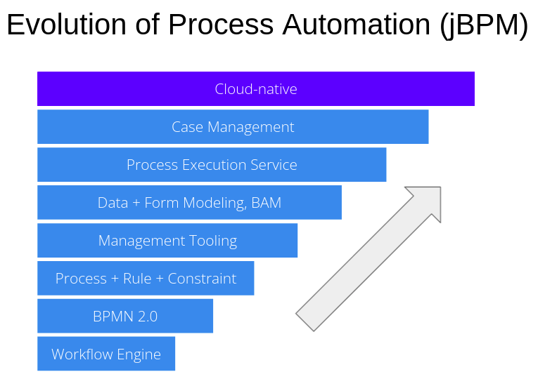

Process Automation: An Update from the Trenches (Webinar Recording)
Quick summary: Presentation and demo below ! :)
A few months ago, we did a set of webinars as part of our KIE Week event, but for those that might have missed it, the recording is now available! In my session, I gave a bit of an introduction to Process Automation and our journey with jBPM.
Automation has never been more important, but automating business processes end-to-end comes with many challenges. Learn how Red Hat Process Automation Manager has evolved over the years to support the execution of complex processes at scale. Hear about the building blocks we offer that make the life of developers easier and enable easy integration with many other technologies out there. We will show you some of the latest improvements, from event-driven processes to a 100% cloud-native approach to bring your workloads to the hybrid cloud.

There’s also a live demo included (starting at 30:34). It’s showing an event-driven cloud-native straight-through process, with some focus on developer productivity in VSCode and scalability (buzzword bingo!). Enjoy!